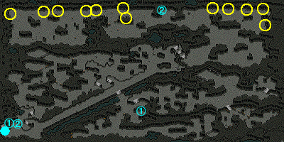

一般クエスト Lv500～599
| 隠された収容所 大捜査線 1 | |
|---|---|
ビショップのマルティ・オッズに、脱獄を企てて同盟を結んだ収容所の凶悪犯たちを鎮静化するため、隠された収容所で諜報活動中のビショップのパルジェを訪ねるように言われた。いくつかある潜伏場所を回れば会えるはずだ。 神聖結界が弱まった隙に脱獄する計画で各勢力をまとめて同盟を結び、ヴァンパイア一族と殺人鬼一族の勢力争いも休戦させてしまった切れ者のアルパレス。そして、高慢な彼が気に入らないキメラ研究員。これからの問題を1つずつ解決しなければ、隠された収容所の鎮静化は難しそうだ。まずは、明晰な頭脳で凶悪犯たちを丸め込んでしまった希代の詐欺師アルパレスに近付き、様々な情報を手に入れよう。 希代の詐欺師アルパレスが、どれほどの実力があるのかテストするという。キメラ研究所にいるキメラを退治して、拘束の首輪を手に入れてこよう。 実力テストの最中に、牢屋のような所に閉じ込められている人々を発見した。怪しまれないよう気をつけながらアルパレスに聞いてみよう。 アルパレスの話によれば、無差別に手を出させないために、殺人鬼一族・ヴァンパイア一族・キメラ研究員にお供えとして、クジで選んだ凶悪犯を捧げているという。この事実を隠された収容所の潜伏場所にいるパルジェに知らせよう。 お供えを捧げられている話にとても驚いたビショップのパルジェは、早くこの事を上に報告しなければと言う。そのためには、殺人鬼一族・ヴァンパイア一族・キメラ研究員がいる各地域の牢屋の現状をマジックペーパーに写し取らなければならない。マジックペーパーを火で炙れば、現在地から直径500m以内の様子が保存されるらしい。牢屋の近くにある火を使おう。 |
|
| 受諾場所 | 神聖都市アウグスタ マルティ・オッズ(105.15) |
| 受諾条件 | Lv500 |
| 報酬 | 経験値332万6200 |
| 隠された収容所 | 連作クエスト 隠された収容所 大捜査線 1 → 隠された収容所 大捜査線 2 → 隠された収容所 大捜査線 3 → 隠された収容所 大捜査線 4 パルジェ(144.133)へ アルパレス(178.21)へ キメラ(Lv500)Zinを倒す。非アクティブ、アンテイム、ワーム攻撃あり。 アルパレスへ パルジェへ たいまつ(44.118)(214.269)(236.155)をクリック  |
| 隠された収容所 大捜査線 2 | |
|---|---|
出来上がったマジックペーパーをビショップのマルティ・オッズのところに送った。ビショップのパルジェのところに戻ろう。 ヴァンパイアを退治して、牢屋の鍵を手に入れたら、お供えになった人たちを救出しよう。 ヴァンパイア一族に捕まったすべての人々を救出した。しかし、他の地域に捕まっている人々が、いつ命を奪われるか分からない！ビショップのパルジェのところに急いで戻って、次の任務について聞こう。 キメラ研究員の実験材料にされる人々を救出することになった。ビショップのパルジェに、拘束の首輪の核となる部品「魔力の玉」にカリモの葉を塗って魔力を遮断するように言われた。 カリモは、洞窟内の水辺に自生しているらしい。 カリモの葉をすべて手に入れた。ビショップのパルジェのところに戻って、使用方法を教えてもらおう。 キメラ研究所の机に置いてある拘束の首輪を探して、魔力の玉にカリモの絞り汁を塗ろう。 |
|
| 受諾場所 | 隠された収容所 |
| 受諾条件 | Lv500 |
| 報酬 | 経験値272万1400 |
| 隠された収容所 | 連作クエスト 隠された収容所 大捜査線 1 → 隠された収容所 大捜査線 2 → 隠された収容所 大捜査線 3 → 隠された収容所 大捜査線 4 パルジェ(144.133)へ 古代ヴァンパイア(Lv550)Zinを倒す。非アクティブ、CP吸収攻撃あり。 牢屋の扉を10回クリック (206.153)(210.157)(214.160)(219.142)(222.146)(226.150) の6箇所あるが、少し時間が経つと何度でもクリックできる。   パルジェへ 草をクリック (8.27)(44.19)(59.18)(89.19)(99.19)(128.17)(131.30)(222.15)(240.14)(258.16)(276.16)(278.50) の12箇所あるが、少し時間が経つと何度でもクリックできる。  パルジェへ 机をクリック (73.279)(73.283)(74.284)(89.260)(90.259)(100.249)(102.247)(109.248)(200.289)(203.291) の10箇所あるが、少し時間が経つと何度でもクリックできる。  |
| 隠された収容所 大捜査線 3 | |
|---|---|
キメラ研究所に捕まった人々を直接救出することはできなかったが、拘束の首輪の破壊に成功したので、自力で逃げることができるはずだ。あとは、殺人鬼に捕まった人々を救出するだけだ。ビショップのパルジェのところに戻って作戦をたてよう。 殺人鬼たちは、ヴァンパイアの牙を持ってくれば、奴隷一人を選んで持って行って良いという。ビショップのパルジェは、アルパレスに関する嘘の情報を流して内部分裂させる作戦も同時に行うという。ヴァンパイア一族の地域で古代ヴァンパイアを退治して、ヴァンパイアの牙を手に入れてこよう！ ヴァンパイアの牙をすべて手に入れた。殺人鬼一族の幹部レペロのところに行き、ヴァンパイアの牙と所有権証明書を交換してもらったら、お供えにされた人に声をかけよう。 もう少しで奴隷にされる所だった彼が、偽の情報を流してくれている。ビショップのパルジェのところに戻って状況を報告しよう。 元々、信頼のかけらも無かった者同士だったため、偽の情報に惑わされた彼らは分裂一歩手前だ。しかし相手は、希代の詐欺師アルパレスである。彼が動き出す前に、追い討ちをかけておこう。ビショップのパルジェにもらった変装用の仮面を着けてレックに変装したら、古代ヴァンパイアたちに不信感を植え付けよう。 変装用の仮面の着用必須！変装用の仮面を失くしてしまったら、ビショップのパルジェに言って新しいのをもらおう。 古代ヴァンパイアらは、レックが戦闘宣布してきたと思い込んだようだ。ビショップのパルジェのところに戻って、次の作戦をたてよう。 |
|
| 受諾場所 | 隠された収容所 |
| 受諾条件 | Lv500 |
| 報酬 | 経験値635万 |
| 隠された収容所 | 連作クエスト 隠された収容所 大捜査線 1 → 隠された収容所 大捜査線 2 → 隠された収容所 大捜査線 3 → 隠された収容所 大捜査線 4 パルジェ(144.133)へ 古代ヴァンパイア(Lv550)Zinを倒す レペロ(59.118)へ 奴隷予定者(37.107)へ パルジェへ 古代ヴァンパイア(Lv550)Zinを20匹倒す。 変装用の仮面を装備した状態で倒さないと、クエスト更新されない。 パルジェへ |
| 隠された収容所 大捜査線 4 | |
|---|---|
|
隠された収容所の暗黒組織は崩壊寸前だ。もう少し頑張れば、隠された収容所の同盟は完全に崩壊するだろう。次の任務は、ジュペスに変装して、恐怖の殺人鬼と極悪の殺人鬼を退治し、2つの一族を対立させよう。 変装用アイテムの着用必須！変装用アイテムを失くしてしまったら、ビショップのパルジェに言って新しいのをもらおう。 殺人鬼らは、ジュペスが直々に宣戦布告してきたと信じたようだ。ビショップのパルジェのところに戻って様子をみよう。 ビショップのパルジェは、キメラ研究員らが、ヴァンパイア一族との戦闘を避けるため、長年にわたり多くのことに譲歩してきた点を利用して、2つの一族が対立関係になるよう挑発してこいという。まずは、ジュペスに変装して研究所長を挑発してこよう。 変装用アイテの着用必須！ 研究所長は、完全に騙されたようだ。ビショップのパルジェに報告しよう。 隠された収容所の問題が、すべて解決した。ビショップのマルティ・オッズに報告しよう。 |
|
| 受諾場所 | 隠された収容所 パルジェ(144.133) |
| 受諾条件 | Lv500 |
| 報酬 | 経験値257万 |
| 隠された収容所 | 連作クエスト 隠された収容所 大捜査線 1 → 隠された収容所 大捜査線 2 → 隠された収容所 大捜査線 3 → 隠された収容所 大捜査線 4 恐怖の殺人鬼(Lv500)Zin、極悪の殺人鬼(Lv500)Zinを50匹倒す。 ジュペスのイヤリング/マントを装備した状態で倒さないと、クエスト更新されない。  パルジェへ 研究所長(207.292)へ ジュペスのイヤリング/マントを装備した状態で話さないと、クエスト更新されない。 パルジェへ |
| 神聖都市アウグスタ | マルティ・オッズ(105.15)へ |


| 妖精研究家の発明品 | |||
|---|---|---|---|
グレートマウンテン北部の妖精の木から長老妖精の羽根の粉を10個採集しよう。 採集した長老妖精の羽根の粉をヴィンスに渡そう。 |
|||
| 受諾場所 | グレートフォレスト/ 妖精達の蜘蛛の糸 ヴィンス(162.171) | ||
| 受諾条件 | Lv500 | ||
| 報酬 | 経験値200万 ヴィンスの錬金術箱を購入できる | ||
| グレートマウンテン北部 | 連作クエスト フェアリーズビーベル → 妖精研究家の発明品 木をクリック (39.202)(58.232)(59.215)(64.198)(68.224)(74.235)(77.220) の7箇所あるが、少し時間が経つと何度でもクリックできる。 |
||
| グレートフォレスト/ 妖精達の蜘蛛の糸 | ヴィンスへ ヴィンスの錬金術箱を所持していると 限界突破Lv4不思議な噴水と新たな祝福 4にて、 祈りのカケラ7個で夢のカケラ1個を作成できる。 ただし、失敗すると祈りのカケラは消滅する。 ヴィンスの錬金術箱は取引不可、銀行・ギルド倉庫保管不可、破壊のみ可。
所持した状態で長老妖精の樹に話しかけると選択肢が変わり、選択肢(2)を選ぶことでチャレンジできる。 失敗時は祈りのかけらを1個、成功時は祈りのかけらを7個失う。 テキストウィンドウには必要な祈りのカケラの所持数のみ記載されている。 成功確率は16～20%程度なので、期待値としては普通に出したほうが速い。(25%で元が取れる。) |
||

[参考] Yotsuba Quest DataBase